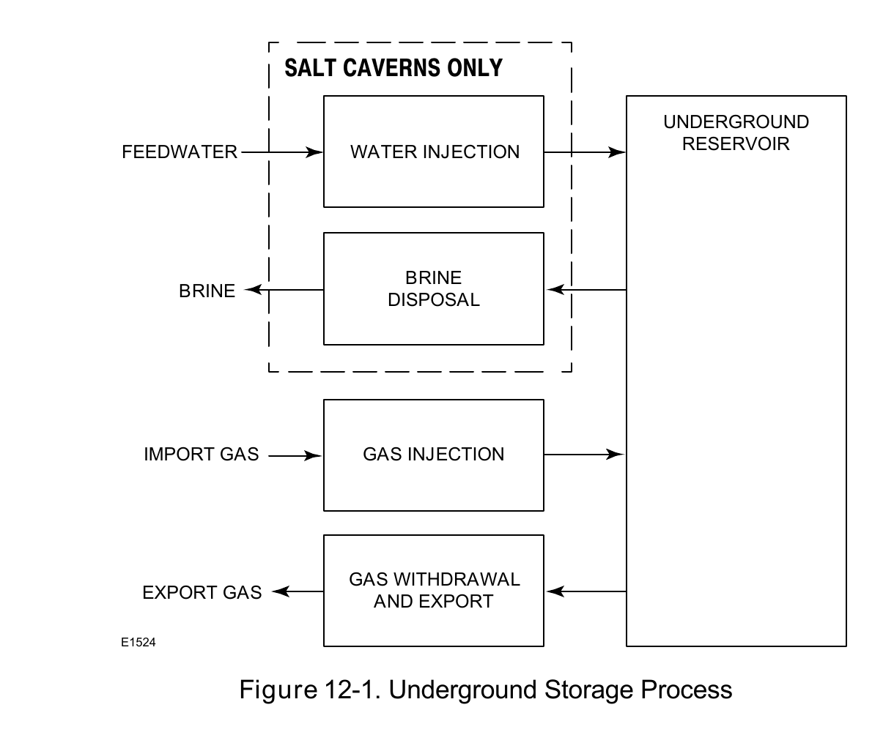

Formation-Type Classification

A natural-gas storage facility's process flow has four possible sub-processes — water injection, brine disposal, gas injection, gas withdrawal/export — flowing into or out of a shared underground reservoir.
Fisher Control Valve Sourcebook — Oil & Gas (© 2013 Fisher), Chapter 12 "Natural Gas Storage," Figure 12-1 (drawing number E1524, printed p. 12-2) — "Figure 12-1. Underground Storage Process." — used directly. Component Index: ogas-cmp-underground-storage-process-flow.